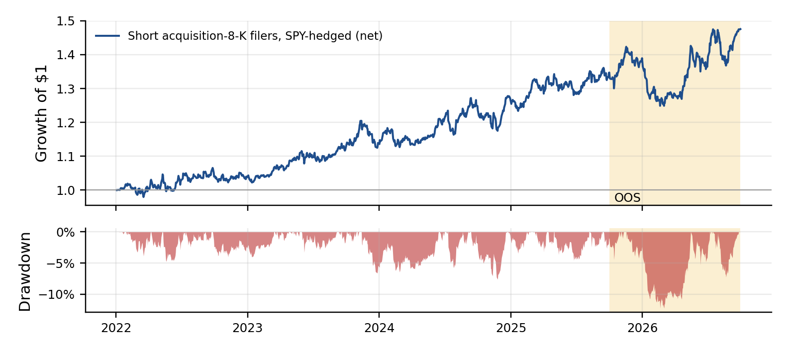

python event8k/grid.py --oos, python event8k/acq_analysis.pyWhen a US company worth $2B or more files an 8-K announcing an acquisition agreement (Massive 8-K disclosure category), we short its stock at the next close, hedge market beta with SPY, and hold for 60 trading days, at 2% of capital per event. The rule was selected blindly from a pre-registered grid of 165 event × holding × size configurations, using in-sample data only (Jan 2022–Sep 2025). Its single out-of-sample run (Oct 2025–Sep 2026) confirmed it. Net of 10 bps per side and a 1%/yr borrow fee: in-sample Sharpe 0.98 (8.3%/yr, max drawdown −7.6%), out-of-sample Sharpe 0.82 (9.9%/yr, −12.2%), with beta to SPY of −0.02. Every calendar year from 2022 to 2026 is positive.
Why acquirers drift down. Bidders systematically overpay. Management hubris and the winner's curse in competitive auctions (Roll 1986), empire building, and optimistic synergy forecasts mean that the average large deal destroys acquirer value (Moeller, Schlingemann & Stulz 2005). The market reacts to the announcement, but only partly: acquirers keep underperforming for months to years afterwards (Loughran & Vijh 1997; Savor & Lu 2009 for stock-financed deals), as integration costs, financing and diluted guidance arrive gradually. Who is on the other side: holders anchored to management's synergy story, analysts who revise slowly, and index and passive owners who keep the stock regardless. Why it persists: each deal is idiosyncratic and hard to value in real time, shorting is costly and squeeze-prone, and the information arrives as soft text (8-K exhibits), not numbers. Testable predictions (checked in Section 5): the drift comes from acquirers, not deal targets; it is event-specific (not a property of these stocks on other dates); it builds over weeks, not on day 1; it is not a market-beta bet.
How we found it, and why that matters. We did not start here. After 32 pre-registered hypotheses (Section 5.4), we committed a grid to git before running it (event8k/GRID_PLAN.md): 34 event definitions × {20, 60, 120} sessions × {≥$2B, ≥$10B}, with a fixed winner rule (best cell surviving BHY; if none, the highest deflated Sharpe). No cell survived BHY. The fallback winner was this one. The hypothesis above explains a pattern found by search, which we disclose prominently, and the out-of-sample test is the evidence that matters.
Events: Massive Filings & Disclosures API (sponsor data), 8-K category acquisition_agreement, all US filers, 2022-01-01 to 2026-09-30 (taxonomy coverage begins in 2022), with one event per filer per 30 days. Universe: filer market cap ≥ $2B on the day before filing (Massive point-in-time reference data), giving 1,109 events across 705 tickers. Firms later acquired or delisted remain in the sample; the 3.7% of events with no point-in-time cap are excluded. Prices: Massive daily bars, split- and dividend-adjusted; SPY is the hedge. Access: Massive REST API with the hackathon key: /stocks/filings/8-K/vX/disclosures (events), /v3/reference/tickers/{t}?date= (point-in-time cap), /v2/aggs (bars). About 60k requests are cached on disk; the raw data is licensed and not committed, and event8k/build_grid.py rebuilds it. Attribution only: Kenneth French 5 factors + momentum; CBOE VIX. Split: 4.75 years of data, so the track's 20% rule binds (0.95 years < 2 years). In-sample is 2022-01-01 to 2025-09-30; out-of-sample is 2025-10-01 to 2026-09-30, run once for the winner. Disclosure: an earlier, different 8-K strategy (abrupt CFO exits) was evaluated once on the same OOS window; the winner was chosen without looking at it. Missing data: no forward-filling from later data; a stock that stops printing is carried at its last close.
| Net of costs and borrow | Ann. return | Vol | Sharpe | t | Max DD | Worst month | Turnover/yr |
|---|---|---|---|---|---|---|---|
| In-sample (2022–Sep 2025) | 8.3% | 8.5% | 0.98 | 1.90 | −7.6% | −3.5% | 14.9× |
| Out-of-sample (Oct 2025–Sep 2026) | 9.9% | 12.1% | 0.82 | 0.82 | −12.2% | −6.9% | 16.4× |
| 2× costs, IS / OOS | 7.5% / 8.9% | 0.88 / 0.74 | −7.8% / −12.5% | ||||
| 2× costs + 3% borrow, IS / OOS | 5.8% / 7.0% | 0.68 / 0.58 | −8.1% / −12.9% | ||||
| Enter 1 / 5 days later, IS | 7.8% / 9.3% | 0.92 / 1.12 |

In-sample, 165 cells had at least 40 events; none survives BHY at 5% or Holm; the winner's p = 0.058 and deflated Sharpe probability 0.67. The second-best cells were also shorts after negative or complex corporate events (internal-control weakness, CEO+CFO joint exits, restatements, auditor dismissal), which is consistent with slow incorporation of bad 8-K news but individually insignificant. The out-of-sample year (0.82, 303 new events) is what lifts this above a search artefact; one year is still short (95% CI on OOS Sharpe ≈ ±2).
Our first, fully pre-registered strategy (rules committed before any data, commit 6b6764d): 12-month time-series momentum on 10 ETFs, with volatility-scaled positions, monthly rebalancing and a VIX overlay. Net of costs and financing: IS 2008–Sep 2024 Sharpe 0.29, OOS Oct 2024–Sep 2026 Sharpe 0.72; correlation with AQR's TSMOM factor 0.72; correlation with the acquirer short −0.10. It is a credible but low-Sharpe trend premium (in-sample t ≈ 1.2) whose OOS gain was mostly equity beta (0.50). Details are in Appendix B and strategy/.
| Research line (pre-registered in git) | Trials | Outcome |
|---|---|---|
| Early pilots: 8-K categories → volume, → direction; Gemini earnings text; weather vs Kalshi | 4 | all failed |
| Momentum variants; 10-idea ETF screen (sector momentum, BAB, overnight, turn-of-month, month-end Treasuries, auctions, timed short vol, FX carry, reversal, pre-FOMC); portfolio | 16 | 2 screen near-misses failed OOS; momentum kept as Strategy 2 |
| Thematic: rainfall → cocoa/coffee/sugar/OJ; GLP-1 headlines; open-source AI releases | 3 | no effect |
| Massive options bonus: exits, CFO/CEO appointments, competitor spillover, settlements, straddle | 9 | no tradable edge (bonus note) |
| 8-K stock events: abrupt CFO exits (IS 0.52 / OOS 0.32); then the 165-cell grid → this strategy | 4 + 165 | see above |
Entries have a median 20-day dollar volume of $72M (10th percentile $17M). With 2% positions and square-root impact (σdaily·√(trade/ADV) per side, on top of the fixed 10 bps):
| Strategy AUM | $10M | $50M | $100M | $250M | $500M |
|---|---|---|---|---|---|
| Median / 95th-pct trade as % of ADV | 0.3% / 1.6% | 1.4% / 7.7% | 2.8% / 15% | 6.9% / 39% | 14% / 77% |
| Extra impact drag (%/yr) | 1.0 | 2.3 | 3.3 | 5.2 | 7.3 |
Against an 8–10% net return, impact takes a third of the edge near $100M and half near $250M, so the realistic capacity is about $100–150M. Larger books should scale position size to ADV (for example, cap each trade at 5% of ADV and work entries over 2–3 days; the lag test shows a 5-day delay costs nothing). About 190–200 entries per year, roughly 4 trades a week. Shorts in ≥$2B names are generally easy to borrow, and the 3%-borrow stress keeps Sharpe at 0.58–0.68. A margin/prime account is required for the short book plus the SPY hedge (gross about 1.7× at full deployment).
FORWARD_LEDGER*.md.Roll, R. (1986). The Hubris Hypothesis of Corporate Takeovers. J. Business. · Loughran, T. & Vijh, A. (1997). Do Long-Term Shareholders Benefit from Corporate Acquisitions? JF.
Moeller, S., Schlingemann, F. & Stulz, R. (2005). Wealth Destruction on a Massive Scale? JF. · Savor, P. & Lu, Q. (2009). Do Stock Mergers Create Value for Acquirers? JF.
Benjamini, Y. & Yekutieli, D. (2001). FDR under dependency. Annals of Statistics. · Harvey, C., Liu, Y. & Zhu, H. (2016). …and the Cross-Section of Expected Returns. RFS.
Bailey, D. & López de Prado, M. (2014). The Deflated Sharpe Ratio. JPM. · Bailey, D. et al. (2017). The Probability of Backtest Overfitting. J. Computational Finance.
Moskowitz, T., Ooi, Y. H. & Pedersen, L. (2012). Time Series Momentum. JFE. · Hurst, B., Ooi, Y. H. & Pedersen, L. (2017). A Century of Evidence on Trend-Following. JPM.
Data: Massive (8-K disclosures, reference data, daily bars, options); Yahoo Finance; CBOE VIX; Kenneth French Data Library; AQR data sets; US Treasury; Federal Reserve; FRED; Open-Meteo. Tools: Python, pandas, NumPy, SciPy, matplotlib.
event8k/output/grid_is.csv)| Event · size · hold | n | Dir | Sharpe | t | Halves | BHY q | DSR |
|---|---|---|---|---|---|---|---|
| acquisition_agreement · ≥$2B · 60 | 732 | short | 0.98 | 1.90 | 1.17 / 0.70 | 1.00 | 0.67 |
| internal_control_weakness · ≥$2B · 20 | 79 | short | 0.92 | 1.77 | 0.56 / 1.24 | 1.00 | 0.62 |
| acquisition_agreement · ≥$2B · 120 | 732 | short | 0.88 | 1.69 | 0.69 / 0.93 | 1.00 | 0.59 |
| CEO_AND_CFO exits · ≥$2B · 60 | 75 | short | 0.88 | 1.69 | 0.64 / 1.12 | 1.00 | 0.59 |
| financial_restatement · ≥$2B · 20 | 43 | short | 0.87 | 1.68 | 0.84 / 0.98 | 1.00 | 0.59 |
| acquisition_agreement · ≥$10B · 120 | 285 | short | 0.83 | 1.60 | 0.89 / 0.73 | 1.00 | 0.56 |
| divestiture_agreement · ≥$10B · 20 | 153 | short | 0.83 | 1.60 | 1.66 / 0.07 | 1.00 | 0.56 |
| auditor_dismissal · ≥$2B · 20 | 86 | short | 0.80 | 1.55 | 0.93 / 0.66 | 1.00 | 0.54 |
| Ann. return | Sharpe | Max DD | Notes | |
|---|---|---|---|---|
| In-sample 2008–Sep 2024 | 2.8% | 0.29 | −27.5% | AQR TSMOM corr 0.72; 3/6/9/12m plateau 0.18–0.30 |
| Out-of-sample Oct 2024–Sep 2026 | 8.7% | 0.72 | −13.3% | market β 0.50; alpha t −0.07 |
| Stress: GFC / 2022 / COVID | +16.8% / +23.5% / −3.2% (SPY −46% / −24% / −33%); loses in V-shaped reversals (Feb 2018 −10.9%) | |||
| Pitfall | How we addressed it |
|---|---|
| P-hacking | Every test pre-registered in git; 32 hypotheses + 165 grid cells reported; BHY/Holm/DSR; nothing claimed as significant after correction |
| Overfitting | No fitted parameters; the grid choices (hold, size) are reported as a plateau; CSCV PBO 0.21 for the ETF screen |
| Lookahead | Entry the session after the filing date; point-in-time market cap; β from past data; lag 1/5 tests |
| Survivorship | All filers, delisted included; point-in-time size filter; 3.7% missing caps excluded |
| Costs | 10 bps/side + 1% borrow; 2× costs + 3% borrow still Sharpe 0.68 IS / 0.58 OOS |
| Test-set leakage | Winner chosen on IS by a committed rule; OOS run once (git log) |
| Misleading Sharpe | t-stats and CIs reported; no short-vol profile (skew −0.16) |
| Regime dependence | Every year 2022–26 positive; VIX>25 Sharpe 0.65; size-factor exposure disclosed |
| Capacity | ADV-based square-root impact; about $100–150M |